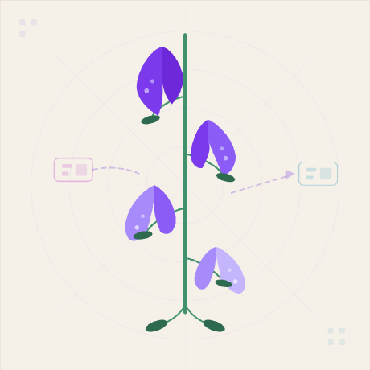

ARM64-to-x86_64 binary translation for Android
Berberis is AOSP's binary translation framework, part of Android's NativeBridge system. It provides the core infrastructure for translating guest architecture instructions to host machine code at runtime — including a JIT compiler, an interpreter, an instruction decoder, syscall emulation, and proxy libraries. Berberis currently supports RISC-V-to-x86_64 translation in upstream AOSP.
Digitalis extends Berberis with an ARM64 backend, enabling ARM64-only Android apps to run on x86_64 emulators. It reuses Berberis's translation infrastructure while adding ARM64 instruction decoding, JIT code generation, and interpreter support. Guest code runs through three tiers: an interpreter, a single-pass lite translator (first gear) for cold regions, and an optimizing heavy translator (second gear) that engages on hot regions.
Per-instruction fallback for syscalls, complex SIMD operations, and edge cases the JIT can't handle.
fallback pathSingle-pass JIT that translates cold ARM64 regions to native x86_64 machine code. Handles ~98% of instructions. Translated regions are cached for reuse.
~98% coverageAn optimizing JIT that re-compiles a region once a hotness counter says it has earned it, doing global register allocation and loop optimization across the whole region. It covers essentially the same instruction surface as the lite tier, so real-app hot loops gear up instead of settling at first-gear speed.
hot-region tierTwo ways to go deeper, same system: take the guided tour — 102 slides, in order, assuming no background — or search the full how-it-works.md, the complete walkthrough covering register mapping, translation lifecycle, NZCV flag emulation, the syscall path, proxy library forwarding, and the ARM64 → x86_64 instruction-mapping reference. Both, plus the benchmark and coverage tables, are listed under Docs.
Translation happens in two gears. Both emit native x86_64 machine code, and both cache what they produce, so a region is translated once and then simply run.
Per-instruction execution for syscalls, complex SIMD, and anything the JIT can't handle. Ensures complete ARM64 coverage.
A guest ARM64 library cannot call the host's x86_64 one directly. 21 proxy libraries stand on that boundary — Vulkan, libc/libm, EGL/GLES, AAudio, camera, NDK binder, NNAPI, JNI helpers — translating each call and forwarding it to the native implementation.
JNIEnv translation, host→guest callbacks, and the ~80 ANGLE extension procs a browser engine gates on but eglGetProcAddress would otherwise return NULL for.ANativeWindow_lock made a video app render solid green; a guard-page read inside the allocator wrappers looked for weeks like host memory exhaustion. Both fixed here — and the stride now comes from asking the host allocator rather than assuming the format's rule, because row padding is gralloc's choice, not the pixel format's.Every sample is an ARM64-only APK that runs end to end on the x86_64 emulator: ported NDK samples, third-party native libraries, whole UI engines, and one probe per ARM64 instruction extension.
The full catalogue is grouped by subsystem further down the page.
ARM64-only APKs running on an x86_64 emulator via NativeBridge translation.
Vulkan, OpenGL ES 1.x/2/3, EGL, and renderers
The Android APIs a native app actually calls
Playback, capture, and the low-latency paths
Players, transcoding, and real-time streams
Pixel pipelines and vector rendering
Real inference, checked bit-exact against goldens
Libraries where a wrong bit is silent, not loud
Storage engines and the codecs around them
Whole frameworks, not just their leaf libraries
Runtimes that generate or dispatch code themselves
Stacks that fork, thread, and hold sockets open
Hot loops, and the text formats around them
One extension each, asserted against hand-computed goldens
Beyond the in-tree samples, real unmodified third-party ARM64 APKs are tracked on the Verified Apps page.